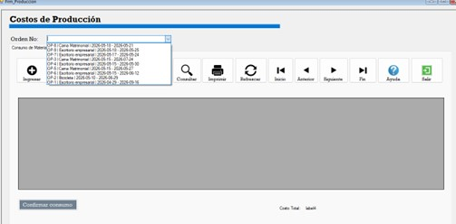
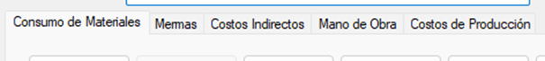
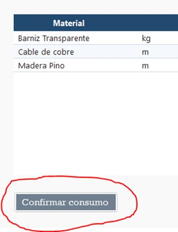
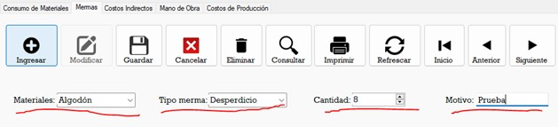
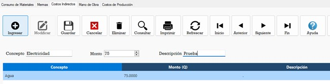
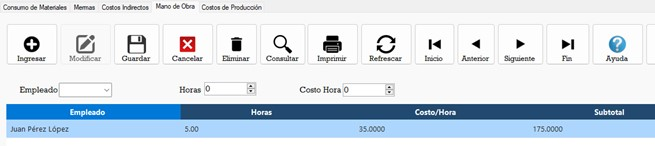
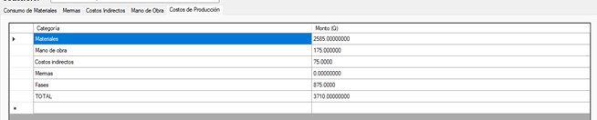

DataGridView Principal
En el datagrid principal se selecciona en el combobox la orden de producción a la que se le asignarán los costos para que luego cargue los datos.

Pestañas de costos
Hay 5 pestañas de costos las cuales solo se le debe dar click para acceder a sus interfaces correspondientes, estas pestañas son: Consumo de Materiales, Mermas, Costos Indirectos, Mano de Obra y Costos de Producción.

Pestaña 1: Consumo de Materiales
En esta pestaña se muestra un recuento de los materiales que necesitará la orden seleccionada para producirse, el botón de confirmar consumo descuenta del inventario los materiales que se muestran en la tabla.

Pestaña 2: Mermas
Aquí se registran las mermas que hayan quedado de la producción del producto, se seleccionan los materiales que tengan merma, luego el tipo de merma, la cantidad y se escribe el motivo, luego se le da click al botón de guardar para insertar la merma.

Pestaña 3: Costos indirectos
Se escribe el concepto del costo indirecto(agua, luz, gas, etc.) se coloca el monto de ese costo, una descripción y luego se le da click al botón de guardar para insertar el costo.

Pestaña 4: Mano de obra
Aquí se calcula el costo de horas trabajadas por los empleados, se selecciona el empleado, se ingresa el número de horas que trabajó y se ingresa el costo de la hora. Luego click en botón guardar para insertar los datos.

Pestaña 5: costos de producción
Aquí se muestra una tabla con el recuento de todos los costos anteriores y se muestra el total de costos de la orden de producción seleccionada.
